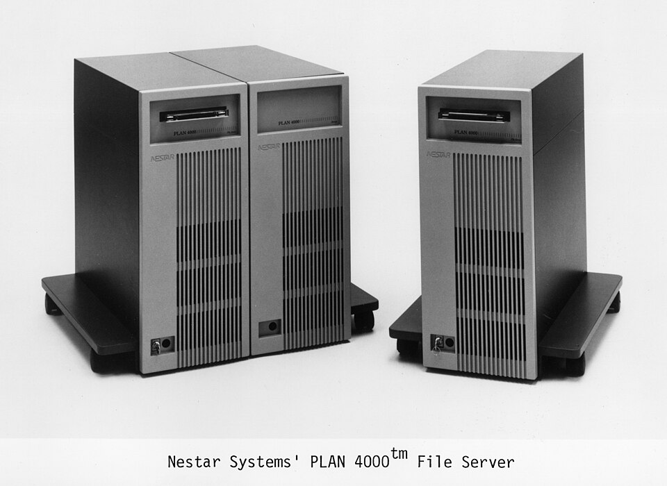
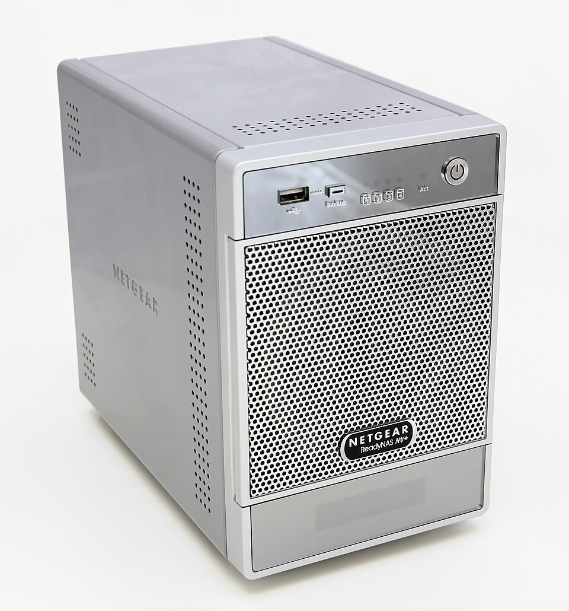

Servidores de ficheros
Un servidor de ficheros centraliza el almacenamiento y lo ofrece a la red mediante protocolos de compartición.

1. Protocolos
- SMB/CIFS: nativo de Windows, también en Linux (Samba).

NFS: para entornos Unix/Linux.- FTP/SFTP: transferencia (SFTP añade cifrado SSH).
2. Configuración
Se crean carpetas compartidas, se definen permisos y cuotas, y se publican en el directorio de red (ej. Active Directory).
3. Cuotas y auditoría
- Limitar espacio por usuario (cuotas).
- Registrar accesos para detectar usos indebidos.
graph TD C[Cliente] -->|SMB/NFS| S[Servidor ficheros] S --> DIS[Disco central] S --> CUOT[Cuotas] S --> AUD[Auditoría]
mindmap
root((Servidor fich))
SMB
NFS
SFTP
Cuotas
Ejemplo resuelto en clase
Caso práctico: Configurar un servidor de ficheros.
- Instala Samba/Windows File Server y crea un recurso compartido.
- Mapea la unidad en clientes (letra Z: → \\servidor\datos).
- Aplica cuotas para limitar el espacio por usuario.
- Verifica acceso concurrente desde 2 clientes.
graph LR SRV[Servidor ficheros] --> SHARE[Recurso] CLI1[Cliente] --> SHARE CLI2[Cliente] --> SHARE
Ejercicio para resolver (que propone el profesor al alumno): El alumno monta un servidor de ficheros y mapea la unidad en 2 clientes.
Ampliación de contenido
Para entender lo anterior (puentes conceptuales)
- El servidor de ficheros es "el armario común del colegio". En vez de que cada uno guarde en su cajón, hay uno central al que todos llegan por la red.
- SMB/NFS/SFTP = "distintas formas de pedir el archivo". El mismo disco se ofrece por varios protocolos; el cliente usa el que entiende.
- Cuota = "tu parte del armario". Un límite de espacio para que nadie llene el disco de todos con su música.
Para profundizar en los contenidos actuales
Protocolos de acceso. SMB (Windows, y Linux vía Samba) para compartición de carpetas; NFS entre Linux/Unix; SFTP para subir/bajar con cifrado SSH. Elegir según el cliente.
Carpetas compartidas. Se definen sobre el almacenamiento central y se publican (en AD, como recurso de red); los clientes las montan o las ven en "Red".
Permisos y cuotas. Se combina la ACL/cuota por usuario con los permisos de la carpeta. La cuota evita que un usuario consuma todo el volumen; se avisa antes de llenar.
Auditoría. Registrar quién abrió/modificó qué sirve para detectar usos indebidos y para recuperar tras un borrado. Sin log, no hay traza.
Respaldo del propio servidor. El servidor central es un punto crítico: sus discos se copian a parte (y las cuotas no sustituyen la copia). Si falla el disco, la "nube local" desaparece.
Revisión didáctica
- "El servidor está lleno" por una sola cuenta. Sin cuotas, un usuario puede ocupar todo el volumen y dejar a los demás sin espacio. La cuota es prevención, no castigo.
- SFTP no es "FTP con S". SFTP va sobre SSH (cifrado y mismo puerto 22); FTPS es FTP con TLS. Confundirlos cambia la configuración del servidor.
- El servidor central es un punto único de fallo. Si su disco muere y no hay copia, "todos" pierden sus archivos. La centralización exige respaldo propio.
- Publicar en AD no es "dar permisos". Publicar solo hace visible el recurso; los permisos se siguen configurando aparte. Ver el recurso no es acceder.
- Auditoría sin revisar no sirve. Generar logs que nadie mira no detecta nada; la auditoría es útil si se consulta ante un incidente.
Hilo de aprendizaje sugerido: (1) servidor = armario común → (2) protocolos (SMB/NFS/SFTP) → (3) carpetas compartidas y publicación → (4) permisos + cuotas → (5) auditoría y respaldo del servidor → (6) errores (cuota, SFTP vs FTPS, punto único de fallo).
Enlaces relacionados
Recursos externos
Vídeos y artículos recomendados: